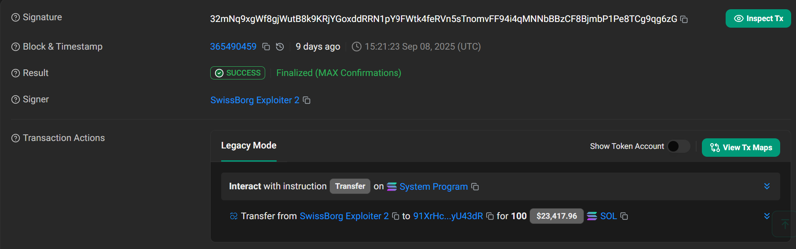

SwissBorg Lost $41M in SOL
Due To a Third-Party API Breach
SwissBorg Exploit on September 8, 2025
Hacker Stole $41M in SOL from Kiln's API, Staking Partner of SwissBorg on September 8, 2025.
SwissBorg is a Switzerland-based crypto wealth management platform was hit by $41M theft due to security breach in its staking partner Kiln that result in theft of 192,623.39 of Solana tokens. Despite the scale of the exploit, CEO Cyrus Fazel confirmed that the incident only affected roughly 1% of its users base and the core application along with smart contracts remain secure and promised compromised users with full reimbursement.
SwissBorg CEO Calls Hack a “Bad Day, Not a Fatal Blow”
SOL Earn Incident & SwissBorg Recovery Plan
— SwissBorg (@swissborg) September 8, 2025
A partner API was compromised, impacting our SOL Earn Program (~193k SOL, <1% of users).
üëâ Rest assured, the SwissBorg app remains fully secure and all other funds in Earn programs are 100% safe.
Our recovery plan.
Immediate Actions…
Hack Analysis
Kiln provides staking infrastructure for Ethereum and Solana to make staking simple for retail investors who might not want to deal with the complexities of running validator nodes or engaging directly with DeFi protocols. Hacker targeted it's API that bridge SwissBorg's application to Solana's staking network which allowed the hacker to manipulate requests and siphon tokens meant for staking on the Solana network.
Account `TYFWG3hvvxWMs2KXEk8cDuJCsXEyKs65eeqpD9P4mK1`:
- Hacker gained access to 8 stake accounts and succeeded in transferring the withdrawal authority from each account to his wallet with address TYFWG3hvvxWMs2KXEk8cDuJCsXEyKs65eeqpD9P4mK1
- After the hacker secured the withdrawal authority to his wallet address `TYFWG3hvvxWMs2KXEk8cDuJCsXEyKs65eeqpD9P4mK1`, he initiated a series of funds withdrawal from all 8 compromised accounts which resulted in losing 192,623.39 Solana tokens equivalent to $41M.
- Withdraw from First Stake Account `9kHJ9Qn9xwRjXZx6zQqNSo53tzC9wXjfLZJNJCECR3CV` 25,373 SOL tx hash: 5yVsTap9zCh23pjdfEWmbaHXPBMrss5B4NsxdjCgDL8QGQMSq7jsiSJrZ6vQDrV9sB54qzhsqdYaQxdKg6Pz4KqN
- Withdraw from Second Stake Account `DXxU84PWxpmToqW5GSZB5X7ucZt6gmdwkBi6ioP2fdXX` 25,373 SOL tx hash: 4S1iX5mYqUKf3t1uQ8EGfKFynfWcdfPpqmwtPkeDP1XRvHP8rqxgpQBBfijm4ojp1LBF4HY5GaPJtYgckFUvbDXF
- Withdraw from Third Stake Account `ALpwKn1RskbkkPcJQb157P57gxyt82WcHB4EhXActPcZ` 25,373 SOL tx hash: 6Ri47GRE2JCvPnrA6wcrLnFooL8RhT5x8xN5J2mFwhrMryxzxFdfXYcThxPN49JdwtTdic45yVtYyrKip5oR8MX
- Withdraw from Fourth Stake Account `77oy5fSKLHc1VHn3No8bxP1G8TqGKF2USZcAoL2tb7SY` 25,373 SOL tx hash: 2EAqjHBY6m4opdBLDQ7YiTX3KHpTJiwidFCUZ7hkE1wpLt4pYDJEgqHaaZ4FBzEEAiZqe5fsq8czkTdd8gC52jMK
- Withdraw from Fifth Stake Account `GvyfmShUFnFpgzP63ruVzHb4dVSp4X7SMzznKdUNfYD5` 25,373 SOL tx hash: 31kHEX3wvZhnZRLJvSHgT2ftDMW2AxxfLJ4D24cY7J1jo1onqMEfcnM3goargneWqZTDGYryouddtQMk9qAvFjTT
- Withdraw from Sixth Stake Account `5mh69Tx22Z574fo6QxgBe7aE5mTxHpSPDmfikjRQe534` 24,545 SOL tx hash: 2oSyFfaAjiGkdZhivR6KY2mB3Vhc1UUjXYoRLNQrgFCESuMMvKAD9NakbUxkRjzDi2wzxtMaRQDjBBoQFgxGt3Wf
- Withdraw from Seventh Stake Account `BcNKASVphMrm9AWSXmYR7fw9ewB7Qau18K69wC1EZmGx` 22,170 SOL tx hash: 2Cn6DzHKe5EMFjC2SnNznCotnHFg85AEUYz94QCBSrW5Z3CcgLmStKaeVoHj9Vipq9Rw96Wm5f7PeZ7uuWyZHsnL
- Withdraw from Eighth Stake Account `8ELwAvLLcmSwt1k3QHwBT7Hj9pEjv2qQF3X5yu4JXUKi` 19,039 SOL tx hash: CfFAp2GzwxK7B9jD1QPHaCT333czvaXpRMz74HhREyKkvr55HzXeewhVteDirpLP1TKdMtUfVLYm73p26PUWZ4d

- Hacker splitted the total stolen funds of 192,623.39 SOL into one gigantic single transaction and four smaller transactions from wallet address `TYFWG3hvvxWMs2KXEk8cDuJCsXEyKs65eeqpD9P4mK1` to the following accounts:
-
First small transfer to wallet address `6v7ntAfqAyWX9fBsYXRu4PTkQkntVGXChkTjEJuhy1mz` of 100 SOL.
First Small Transfer -
Second small transfer to wallet address `6bnSQH4UtGKgo4hUXRj8MeMz2bqPP6hxSaRrBjL96QaT` of 1,000 SOL.
Second Small Transfer -
Third small transfer to wallet address `6bnSQH4UtGKgo4hUXRj8MeMz2bqPP6hxSaRrBjL96QaT` of 1,000 SOL.
Third Small Transfer -
Fourth small transfer to wallet address `5jf8RjfS8LV8uoELufjhMPejskRS7HmSVcH77PH4Yctb` of 1,000 SOL.
Fourth Small Transfer -
Fifth and Last gigantic transfer to wallet address `2dmoNLgfP1UjqM9ZxtTqWY1YJMHJdXnUkwTrcLhL7Xoq` of 189,524.34 SOL.
Single Transaction Transfer of Major Stolen Funds -
Hacker depleted account TYFWG3hvvxWMs2KXEk8cDuJCsXEyKs65eeqpD9P4mK1
from all funds and end up with zero balance.
Hacker's Final Wallet Address Balance
Account `2dmoNLgfP1UjqM9ZxtTqWY1YJMHJdXnUkwTrcLhL7Xoq`:
- By tracking the gigantic single transfer took place in account `2dmoNLgfP1UjqM9ZxtTqWY1YJMHJdXnUkwTrcLhL7Xoq`, the hacker initiated another series of total transfers of 9 transactions as follows:
-
Transfer of 1,000 SOL to account `5hHNfsq2eo3EXwb1Hyff6kdoVqsCcLKkkvy89hLj27P`
First Final Transfer of Funds Out of Major Account -
Transfer of 310 SOL to account `FH9HkEocEAnu172sNB69sw2uA4JqzV7QwPk8cuxpDLDn`
Second Final Transfer of Funds Out of Major Account -
Transfer of 310 SOL to account `GbN31VXnE1tBkncFrECan2kW4mQSJHEZRtNgbDyLhSKk`
Third Final Transfer of Funds Out of Major Account -
Transfer of 1,000 SOL to account `AvCgDyK9WE3pQUHrzjrw1aj4yeoFWUPkik3vAVQ5BKYz`
Fourth Final Transfer of Funds Out of Major Account -
Transfer of 1,000 SOL to account `FqsYj4FQEhdYCSr5an9iPTqZwKPMBnGXJo1zCXyv9QKW`
Fifth Final Transfer of Funds Out of Major Account -
Transfer of 412 SOL to account `9caEgRG2c8cXSAHnMnd3pdMH94ZNwdJuvYtFCpaxoCX6`
Sixth Final Transfer of Funds Out of Major Account -
Transfer of 60 SOL to account `E1scVKrgPrd9HFbtXDoGkyfTG65B2idPDPcoBLUz1hde`
Seventh Final Transfer of Funds Out of Major Account -
Transfer of 700 SOL to account `9QPm7FaqEToRcSJoBHZtSRfEARC1ZQ2hzMeCNb2ojRTu`

Eighth Final Transfer of Funds Out of Major Account -
Transfer of 1,200 SOL to account `EdeJNqdDVcphbxrGosSQEC8nPj3KQAhBt4ZDdTinuKNt`
Ninth Final Transfer of Funds Out of Major Account -
The Final status of wallet address 2dmoNLgfP1UjqM9ZxtTqWY1YJMHJdXnUkwTrcLhL7Xoq
after all above transfers ended with total balance of 183,532.45 SOL sitting in the hacker's account.
Hacker's Final Wallet Address Balance
Account `6bnSQH4UtGKgo4hUXRj8MeMz2bqPP6hxSaRrBjL96QaT`:
- Account `6bnSQH4UtGKgo4hUXRj8MeMz2bqPP6hxSaRrBjL96QaT` had an initial balance of total 2,000 SOL transferred from account `TYFWG3hvvxWMs2KXEk8cDuJCsXEyKs65eeqpD9P4mK1`, tracking the hacker executing another series of transfers:
-
Transfer of 10 SOL to account `7CaTs8hAwF27AV8zpngiB1DLNnjBWdTgjj4tTgCy62kA`
First Final Transfer of Funds Out of Exploit2 Account -
Transfer of 100 SOL to account `8jHn6US1Y3GG5V2Jz1BYbmyxaV52GLKguVHMjcW3NLui`
Second Final Transfer of Funds Out of Exploit2 Account -
Transfer of 10 SOL to account `3XL3qRRsw8BmEne53anKuFZztKU5uftXYurdEsE9r1S1`
Third Final Transfer of Funds Out of Exploit2 Account to Exploit3 Account -
Transfer of 100 SOL to account `4nKXCXAFbyWgnkp9zQXqXmcN1veYYM7Ti7fKdMfbFnkz`
Fourth Final Transfer of Funds Out of Exploit2 Account -
Transfer of 500 SOL to account `3XL3qRRsw8BmEne53anKuFZztKU5uftXYurdEsE9r1S1`
Fifth Final Transfer of Funds Out of Exploit2 Account to Exploit3 Account -
Transfer of 100 SOL to account `3cHSYUDeCP8QUvikWAYxZvrY13Sch4cN6xT7QghfNbh4`

Sixth Final Transfer of Funds Out of Exploit2 Account -
Transfer of 500 SOL to account `3XL3qRRsw8BmEne53anKuFZztKU5uftXYurdEsE9r1S1`
Seventh Final Transfer of Funds Out of Exploit2 Account to Exploit3 Account -
Transfer of 100 SOL to account `91XrHcYL9eAFB3G7w53X4mXV4zaaZypVe3MrPCyU43dR`
 Eighth Final Transfer of Funds Out of Exploit2 Account to Bitget Exchange Depository Account -
Transfer of 50 SOL to account `3XL3qRRsw8BmEne53anKuFZztKU5uftXYurdEsE9r1S1`
Ninth Final Transfer of Funds Out of Exploit2 Account to Exploit3 Account -
The Final status of wallet address 6bnSQH4UtGKgo4hUXRj8MeMz2bqPP6hxSaRrBjL96QaT
after all above transfers ended with total balance of 530 SOL sitting in the hacker's account.
Final Balance of Exploit2 Account
Amount Deposited in Bitget Exchange:
-
Amount of 100 SOL was transferred from account `6bnSQH4UtGKgo4hUXRj8MeMz2bqPP6hxSaRrBjL96QaT` to Bitget Deposit account `91XrHcYL9eAFB3G7w53X4mXV4zaaZypVe3MrPCyU43dR`
to deposit 99.987 SOL in Bitget Exchange `A77HErqtfN1hLLpvZ9pCtu66FEtM8BveoaKbbMoZ4RiR`
Bitget Exchange Deposit
Account `3XL3qRRsw8BmEne53anKuFZztKU5uftXYurdEsE9r1S1`:
-
The Final status of wallet address 3XL3qRRsw8BmEne53anKuFZztKU5uftXYurdEsE9r1S1
after all above transfers ended with total balance of 44.95 SOL sitting in the hacker's account.
Final Balance of Exploit3 Account
Post Hack mitigation
All Hacker Accounts are being tracked and labeled to warn all Solana users:
- Account TYFWG3hvvxWMs2KXEk8cDuJCsXEyKs65eeqpD9P4mK1: was labeled as Exploit 1.
- Account 6bnSQH4UtGKgo4hUXRj8MeMz2bqPP6hxSaRrBjL96QaT: was labeled as Exploit 2.
- Account 3XL3qRRsw8BmEne53anKuFZztKU5uftXYurdEsE9r1S1: was labeled as Exploit 3.
- Account 2dmoNLgfP1UjqM9ZxtTqWY1YJMHJdXnUkwTrcLhL7Xoq: hasn't been labeled yet but tracked.
Kiln began the orderly exit of all of its Ethereum (ETH) validators. The exit process is a precautionary measure designed to ensure the continued integrity of the staked assets.
Kiln disabled its dashboard, widgets, and APIs during the investigation, initiating precautionary steps to safeguard validator operations and mitigate further risk.
Kiln Announcement Postmortem
We are currently investigating an incident and, as a precautionary measure, have temporarily disabled Kiln Connect and Dashboard to ensure the highest level of security. Access to the service will be restored once the issue has been fully resolved.
— Kiln üß±üî• (@Kiln_finance) September 8, 2025
See here for live updates:…
Security Takeaways
The SwissBorg breach highlights how decentralized finance risks extend well beyond smart-contract code. Third-party APIs and staking partners introduce their own attack surface and must be vetted and monitored continuously. In this case, an attacker spent days setting up on-chain indicators and then drained millions in minutes once the gap was clear. Robust defense means layering safeguards—live authority alerts, transaction simulation, and recurring penetration tests on every external integration. SwissBorg’s rapid incident response shows strong operational discipline, but the episode is a reminder that frequent independent audits are critical to stopping the next large-scale exploit.
Protect Your Protocol and All Your Partners with Cyfrin CodeHawks Audit
A completely redesigned competitive smart contract security audit platform with new features and functionality, improved processes, and industry-leading usability.
Request an Audit